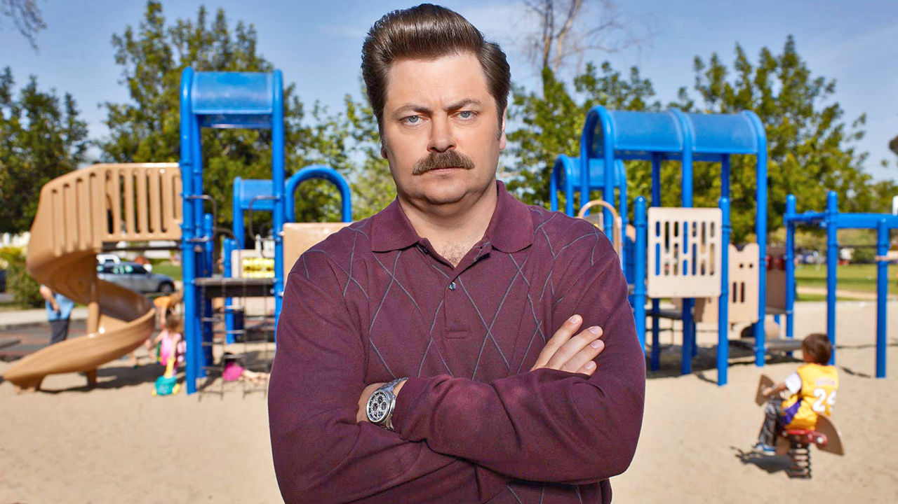

Ron Swanson

Ron Swanson is, in my opinion, best described with a few of his own quotes:
- "When I eat, it is the food that is scared."
- "Just give me all the bacon and eggs you have. Wait... wait. I worry what you just heard was: Give me a lot of bacon and eggs. What I said was: Give me all the bacon and eggs you have. Do you understand?"
- "Son, there is no wrong way to consume alcohol."
- "I've cried twice in my life. Once when I was seven and hit by a school bus. And then again when I heard that Li'l Sebastian had passed."
- "Please, talk more about how you hate Europe and bicycles."
- "Never half-ass two things. Whole-ass one thing."
- "I once worked with a guy for three years and never learned his name, best friend I ever had. We still never talk someetimes."
- "Any dog under 50 pounds is a cat, and cats are pointless"
Ron Swanson is a character in the NBC comedy Parks and Recreation.